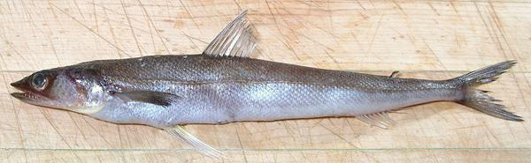
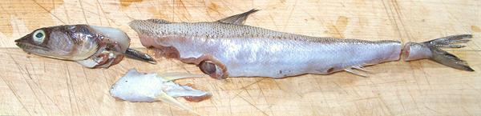
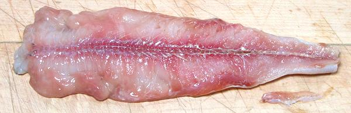
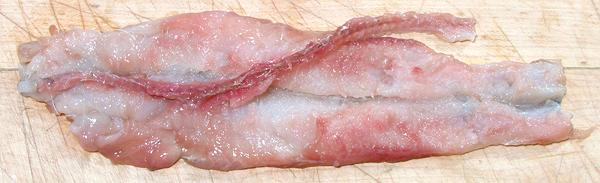
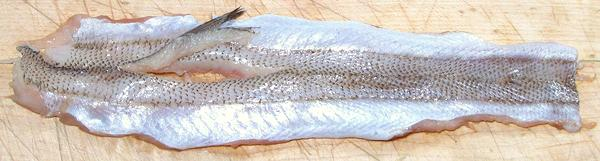
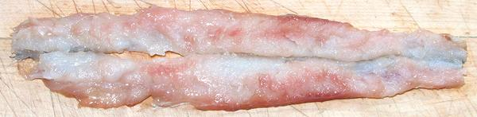

Filleting a Lizardfish
 Whole Fish as purchased.
 First trim: Head, Tail and Pelvic Fins.
 Gutted and annal fin removed.
 Backbone cut loose.
 Dorsal Fin Removed.
 Fillet trimmed and excess water wrung out.